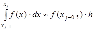

Методы прямоугольников
 подынтегральную функцию заменяют полиномом Лагранжа нулевого порядка, построенным в одной точке. В качестве этой точки можно выбрать середину частичного отрезка
.
подынтегральную функцию заменяют полиномом Лагранжа нулевого порядка, построенным в одной точке. В качестве этой точки можно выбрать середину частичного отрезка
.
Тогда значение интеграла на частичном отрезке:
Подставив это выражение в:

Получим составную формулу метода средних прямоугольников:
(1)
Графическая иллюстрация метода средних прямоугольников представлена на рис 2. Из рисунка видно, что площадь криволинейной трапеции приближенно заменяется площадью многоугольника, составленного из N прямоугольников. Таким образом, вычисление определенного интеграла сводится к нахождению суммы N элементарных прямоугольников.
Pис. 1 Метод средних прямоугольников
Формулу (1) можно представить в ином виде:
Эти формулы называются формулой левых и правых прямоугольников соответственно. Графически метод левых и правых прямоугольников представлен на рис. 2 и рис. 3. Однако из-за нарушения симметрии в формулах правых и левых прямоугольников, их погрешность значительно больше, чем в методе средних прямоугольников.
 Рис. 2 Метод левых прямоугольников
Рис. 3 Метод правых прямоугольников
Рис. 2 Метод левых прямоугольников
Рис. 3 Метод правых прямоугольников